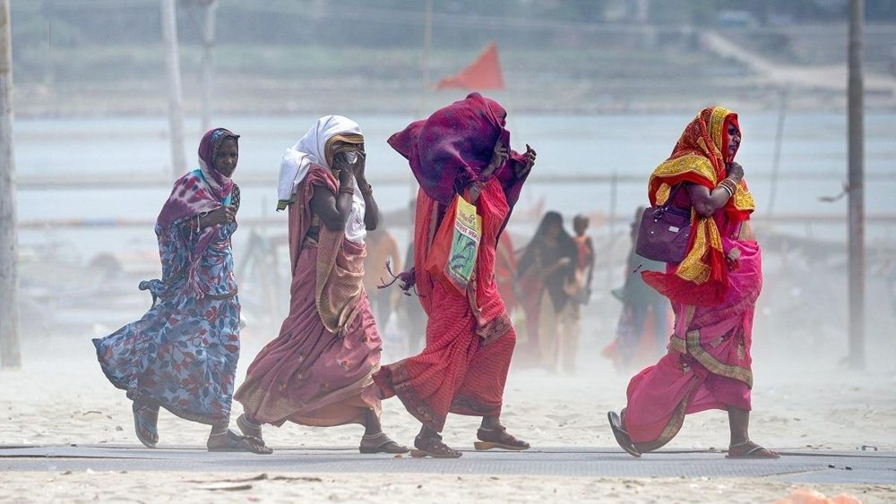
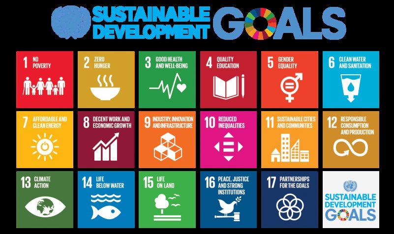
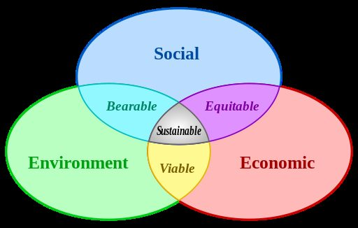
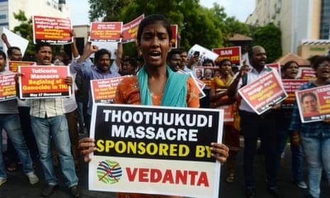
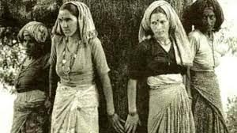
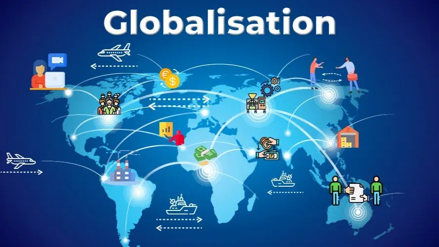
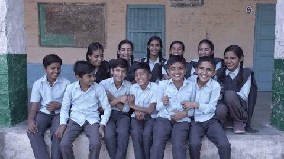

Social Change: Law, Environment, Globalisation, EducationHigh priority
For any agent of change give the enabling provision, the evidence of change and the continuing gap.
Chapter map#
- Social change
Law
- Ambedkar
- Yogendra Singh
- Limits
Women and caste
- Articles 14-16, 17
- Dowry, Domestic Violence Acts
- Atrocities Act 1989
Environment
- Sustainable development
- SDGs
- CBDR
Movements
- Chipko
- Gandhian
- Marxist
- Ecofeminism
Globalisation
- Economic
- Cultural
- Political
- Critique
Education
- Constitution
- NEP 2020
- Inequality
Exam lens#
The story first#
In simple words#
- Law is an agent of change (women, caste) but cannot alone end dowry, scavenging or caste discrimination.
- Sustainable development (Brundtland 1987, 17 SDGs 2015) reconciles growth and ecology; developing countries cite CBDR.
- Environmental movements are read as Gandhian, Marxist or ecofeminist; globalisation and education are the other agents of change.
| Term | In plain words |
|---|---|
| Sustainable development | Development meeting present needs without compromising future generations (Brundtland, 1987). |
| CBDR | Common But Differentiated Responsibilities: developed countries give finance and technology. |
| New Social Movements | Movements on identity and environment rather than only class redistribution. |
| Ecofeminism | Domination of women and of nature are interconnected. |
| Green GDP | Measure adjusting GDP for environmental cost. |
| Excessive legalism | Complex, legalistic Constitution making justice hard to reach. |
| Chipko | 1973 tree-hugging movement by rural women. |
1 · Social Change#
- Social change refers to significant transformations in the structure, institutions, relationships, values and practices of society over time.
- In India, it has been shaped by the interaction of tradition and modernity, internal social processes and external influences, and planned interventions as well as spontaneous mobilizations.
- Institutions such as law and the Constitution, education, science and technology, the economy, democratic politics and social movements have acted as important agents of change.
- At the same time, social transformations have influenced India’s natural environment and generated new ecological concerns.
- Thus, social change in India is a complex, multidimensional and uneven process marked by both continuity and transformation.
2 · Constitution, Law, and Social Change#
- B. R. Ambedkar viewed the Indian Constitution as a transformative document designed to establish liberty, equality, fraternity, and justice.
- The Constitution was envisioned not merely as a political framework, but as an instrument of peaceful social revolution aimed at dismantling caste, class, and gender inequalities through democratic means.
- Preamble to the Indian Constitution encapsulates its spirit Sociologists such as Yogendra Singh argue that law in India has functioned as a conscious instrument of modernization and social transformation.
- Constitutional and legal measures such as abolition of untouchability, legislation against child marriage, reservations for disadvantaged groups, and measures towards gender equality have significantly altered traditional social structures.
- The Constitution and legal framework have expanded political participation, promoted education among marginalized groups, and enabled emergence of new middle classes among Scheduled Castes, Scheduled Tribes, and backward communities.
- Universal adult franchise and affirmative action policies have democratized Indian society and deepened political consciousness.
- At the same time, sociologists such as Marc Galanter point out that law and society often move at different speeds.
- While the legal system permits inter-caste and inter-faith marriages, social norms continue to favour caste endogamy and community-based restrictions.
- Thus, law often advances ahead of social consciousness.
3 · Limitations of Law as an Agent of Social Change#
- Despite progressive constitutional provisions and legislations,law alone cannot automatically transform society.
- Practices such as dowry, manual scavenging, caste discrimination, and gender violence continue despite legal prohibition.
- One major limitation is weak implementation.
- Judicial delays, administrative inefficiency, and corruption often reduce the effectiveness of laws.
- Large-scale pendency of court cases makes justice slow and inaccessible, especially for poorer sections.
- Legal illiteracy is another major problem.
- Many citizens remain unaware of their rights and lack the resources necessary to access the legal system effectively.
- Socio-cultural attitudes also limit the transformative capacity of law.
- Patriarchal norms, caste prejudices, and traditional hierarchies frequently override constitutional ideals.
- Kalpana Kannabiran argues that patriarchal attitudes often persist even within legal and judicial institutions.
- Thus, while law provides the institutional framework for social transformation, deeper social change requires shifts in values, attitudes, and social consciousness.
4 · Law and the Position of Women in India#
- The Indian Constitution attempted to transform the historically subordinate position of women through equality, protective legislation, and affirmative action.
- Important Constitutional Provisions and Laws 1.
- Articles 14, 15, and 16 guarantee equality and prohibit gender discrimination.
- 2. Articles 243D and 243T provide reservation for women in Panchayati Raj Institutions and urban local bodies.
- 3. Hindu Marriage Act, 1955 and Special Marriage Act, 1954 strengthened women’s marital rights.
- 4. Hindu Succession Act (Amendment), 2005 granted daughters equal inheritance rights.
- 5. Dowry Prohibition Act, 1961 criminalized dowry.
- 6. Protection of Women from Domestic Violence Act, 2005 and Sexual Harassment of Women at Workplace Act, 2013 strengthened women’s safety and dignity.
- These laws have increased women’s educational participation, political representation, economic opportunities, and legal awareness.
- Reservation in local governance has significantly expanded women’s political participation at the grassroots level.
- However, formal legal equality has not fully translated into substantive equality.
- Gender violence, wage discrimination, patriarchal socialization, and unequal domestic burdens continue to persist.
- Feminist legal scholars such as Flavia Agnes argue that patriarchal biases within family, society, and legal institutions continue to limit women’s empowerment.
- Thus, legal reform has improved women’s position, but deeper transformation requires changes in patriarchal social structures and gender norms.
5 · Laws Related to Caste and Untouchability#
- The Constitution sought to dismantle caste hierarchy and untouchability through legal and institutional measures.
- Important Constitutional Provisions and Laws 1.
- Article 17 abolishes untouchability.
- 2. Protection of Civil Rights Act, 1955 enforces abolition of untouchability.
- 3. SC/ST (Prevention of Atrocities) Act, 1989 punishes caste-based violence and discrimination.
- 4. Prohibition of Employment as Manual Scavengers and Their Rehabilitation Act, 2013 seeks eradication of manual scavenging.
- 5. Reservation provisions under Articles 15(4), 16(4), 330, and 332 provide representation in education, employment, and legislatures.
- These measures have enabled political participation, educational mobility, and emergence of a Dalit middle class.
- Reservations and protective laws have challenged traditional caste hierarchies and increased representation of marginalized groups in public institutions.
- However, caste discrimination and violence continue in many parts of India.
- Social exclusion, honour killings, residential segregation, and caste atrocities reveal the persistence of caste-based inequality.
- Marc Galanter described this as the paradox where legal equality coexists with social inequality.
- Andre Beteille observed that even though the ritual basis of caste has weakened, caste continues to influence social relations and access to opportunities.
- Thus, the Constitution and law have delegitimized caste inequality normatively, but social democratization remains incomplete.
6 · Criticisms of Constitutional-Legal Framework#
- The Indian constitutional and legal system has also faced several criticisms.
- 1. Excessive legalism: The Constitution is often criticized for being highly complex and legalistic, making justice inaccessible to ordinary citizens.
- 2. Borrowed: Critics argue that many constitutional features were borrowed from foreign constitutions and insufficiently rooted in indigenous traditions.
- 3. Outdated Laws: India still carries a legacy of archaic colonial laws that no longer suit the realities of a modern democracy.
- Though thousands of redundant statutes have been repealed since 2014, many obsolete laws continue to exist.
- 4. Persistence of inequality: Despite constitutional guarantees, caste, class, and gender inequalities continue in practice.
- 5. “Un-Indian”: The legal and constitutional framework is often criticised as “Un-Indian,” reflecting colonial rather than indigenous thinking.
- Union Law Minister Arjun Ram Meghwal observed in 2024 that colonial laws were crafted to serve British interests and perpetuate a “slave mentality,” calling for their replacement with a justice system rooted in Indian ethos.
- 6. Reflection of Prevailing Inequalities: Several sociologists and legal thinkers argue that the law often mirrors existing social hierarchies rather than challenging them.A.R. Desai described the Indian Constitution as a bourgeois document serving capitalist class interests.
- Feminist legal scholar Flavia Agnes finds patriarchal bias across personal laws, where gender inequalities persist despite constitutional guarantees of equality.
- Pritam Singh highlights how some constitutional provisions subtly privilege the Hindu majority, reflecting majoritarian biases under the guise of secularism.
- Thus, the law, while claiming neutrality, reproduces class, caste, and gender inequalities embedded in society.
- In essence, the Constitution and law have played a major role in democratizing Indian society and promoting social change.
- However, their transformative potential remains constrained by institutional weaknesses, social inequalities, and entrenched cultural attitudes.
- Sustainable social transformation therefore requires not only legal reform but also broader social and moral change.
7 · Environment and Social Change#


- Human societies exist within ecological systems and maintain a continuous interaction with nature.
- Environmental conditions influence livelihoods, food habits, settlement patterns, culture, and social organization, while human activities such as industrialization, urbanization, mining, and large-scale consumption transform ecosystems.
- This reciprocal relationship between society and nature forms the basis of environmental sociology.
- Classical sociologists paid limited direct attention to ecological issues.
- However, with rapid industrialization, climate change, pollution, deforestation, and resource depletion, environment emerged as a major sociological concern in the twentieth century.
- Environmental sociology studies how social structures, economic systems, and political institutions shape ecological outcomes, and how ecological changes in turn affect social life.
- Modern industrial society has generated severe ecological pressures through fossil-fuel consumption, deforestation, intensive agriculture, and extractive development.
- The Intergovernmental Panel on Climate Change has highlighted the central role of human activities in global warming and climate change.
- Anthony Giddens, in The Politics of Climate Change, links ecological degradation with the political economy of industrial capitalism and consumerism.
- Environmental degradation has major social consequences.
- A. J. McMichael notes that climate change contributes to spread of infectious diseases, food insecurity, heat stress, and water-related illnesses.
- Ecological crises such as floods, droughts, cyclones, and sea-level rise also generate displacement, migration, livelihood insecurity, and social conflict.
- These impacts are experienced unevenly, with poorer and marginalized communities bearing disproportionate burdens.
- Several scholars argue that the twenty-first century will increasingly be shaped by environmental politics.
- Ecological crises are no longer merely scientific issues but central questions of governance, development, justice, and sustainability.
- In essence, environment and society are mutually constitutive.
- Economic systems, political institutions, and cultural practices shape ecological conditions, while ecological change profoundly influences livelihoods, health, migration, inequality, and social organization.
- Climate Change and Society Climate change today is primarily driven by anthropogenic activities - those rooted in modern industrial society.
- Large-scale burning of fossil fuels for electricity, transportation, and manufacturing releases massive quantities of greenhouse gases such as carbon dioxide, methane, and nitrous oxide.
- Deforestation reduces the planet’s capacity to absorb carbon, while industrial agriculture, livestock farming, and excessive use of nitrogenous fertilizers further intensify emissions.
- Rapid urbanization, waste generation, and energy-intensive lifestyles amplify the ecological footprint of human society.
- Together, these processes disrupt the natural carbon cycle, trap more heat in the atmosphere, and accelerate global warming, leading to an unprecedented rate of climatic disruption.
- Climate change is linked to strong heat waves and dust storms that affect millions Climate change profoundly affects human societies, threatening health, livelihoods, and overall well-being.
- Rising global temperatures contribute to more frequent and severe heatwaves, floods, cyclones, and droughts, disrupting food production and aggravating water scarcity.
- Changes in precipitation and temperature patterns also heighten the spread of vector-borne diseases and create new public health risks.
- Coastal populations face sea-level rise and land erosion, while agrarian communities struggle with declining crop yields and climate-induced distress migration.
- As highlighted by the IPCC and scholars like A.J.
- McMichael, climate change multiplies existing social inequalities, with the poorest and most vulnerable groups bearing the heaviest burden despite contributing the least to the crisis.
8 · Sustainable Development#




- The idea of sustainable development gained prominence through the World Commission on Environment and Development reportOur Common Future(1987), which defined sustainable development as “development that meets the needs of the present without compromising the ability of future generations to meet their own needs.” Sustainable development represents a shift from a narrow growth-centric understanding of development towards a broader framework integrating:
- 1. Economic development 2. Social justice and equity 3.
- Environmental sustainability
- Earlier models of development emphasized industrial growth, mass production, and GDP expansion.
- However, these models generated environmental degradation, resource depletion, pollution, displacement, and inequality.
- Sustainable development therefore seeks to reconcile economic growth with ecological balance and human wellbeing.
- Thinkers such as Amartya Sen broadened the meaning of development beyond income growth by emphasizing human capabilities, education, health, and quality of life.
- Concepts such as Human Development Index (HDI) and Green GDP emerged from this wider understanding of development.
- Important milestones in sustainability discourse include:
- 1. Limits to Growth(1972) by Dennis and Donella Meadows 2.
- Brundtland Report (1987)
- 3. Rio Earth Summit (1992)
- 4. Paris Climate Agreement (2015)
- In 2015, the United Nations adopted the 17 Sustainable Development Goals (SDGs), focusing on poverty reduction, hunger, education, health, gender equality, sustainable cities, climate action, biodiversity protection, and global partnerships.
9 · Sustainable Development in Developing Countries#
- Developing countries face a major dilemma: they require rapid economic growth to reduce poverty and improve living standards, but conventional growth models often damage the environment.
- This creates tensions between:
- industrialization and ecological protection,
- livelihood needs and conservation,
- infrastructure expansion and sustainability.
- Developing countries argue that industrialized nations bear greater historical responsibility for climate change because they contributed disproportionately to greenhouse gas emissions.
- This principle is reflected in the idea of Common But Differentiated Responsibilities (CBDR), under which developed countries are expected to provide climate finance, technology transfer, and institutional support.
10 · Dialectics between Development and Environment#
- The concept of Sustainable Development seeks to reconcile the seeming contradiction between environmental preservation and socio-economic development.
- From a conventional developmental standpoint, the relationship between development and environment appears inherently dialectical.
- Development depends upon environmental resources such as land, water, forests, and minerals, yet excessive industrialization, urbanization, and consumerism simultaneously degrade these ecological foundations through pollution, deforestation, and resource depletion.
- Anthony Giddens and Ulrich Beck argue that modern development increasingly produces “manufactured risks” such as climate change, biodiversity loss, and ecological crises, forcing societies to rethink the meaning of progress and development.
- This contradiction is particularly visible in developing countries like India, where economic growth is necessary for poverty alleviation and employment, but environmental degradation disproportionately affects the poor through displacement, livelihood loss, and declining access to common resources.
- Development projects such as dams, mining, and industrial corridors often generate conflicts between the state, corporations, environmentalists, and local communities.
- Ramachandra Guha and Joan Martinez-Alier describe such struggles as the “environmentalism of the poor,” where marginalized communities resist ecological destruction in order to protect their survival and livelihoods.
- Sustainable development approach attempts to blend developmental and environmental concerns by promoting a model of growth that balances economic progress, social equity, and ecological sustainability.
- Challenges to Sustainable Development
- Poverty and livelihood pressures
- Rapid urbanization and population growth
- Dependence on fossil fuels and extractive industries
- Weak governance and enforcement
- Lack of technological and financial resources
- Global market pressures and unequal trade relations Measures Towards Sustainable Development 1.
- Promotion of renewable energy 2. Sustainable agriculture and water conservation 3.
- Circular economy and recycling 4. Strong environmental regulation 5.
- Public participation and awareness 6. Climate finance and green technology transfer 7.
- Role of civil society and NGOs 8. Corporate responsibility and green investment Policy Measures in India India has implemented numerous initiatives relevant to the SDGs.
- To address SDG-1 (No Poverty), programmes such as the Deendayal Antyodaya Yojana - National Rural Livelihoods Mission , PM Awas Yojana, PM Kaushal Vikas Yojana have been designed and implemented to ensure livelihood security, housing, skill development so as to address poverty.
- Housing and welfare schemes (affordable housing programmes and targeted cash transfers) support minimum living standards.
- For SDG-2 (Zero Hunger) India’s Public Distribution System , the National Food Security Act , and PM POSHAN aim to secure food and nutrition access.
- Under SDG-3 (Good Health), initiatives such as Ayushman Bharat (PM-JAY) and the rejuvenated primary-health mission strengthen healthcare access and resilience to climate-related health shocks.
- These efforts illustrate how social development and environmental strategies can be integrated - though much remains to be done to ensure equitable outcomes.
- Role of the Private Sector and CSR The private sector is both a driver of environmental impact and a necessary partner in sustainable transitions.
- Firms can reduce emissions, adopt resource-efficient processes, invest in renewable energy, and transform supply chains.
- Corporate Social Responsibility (CSR) has become a vehicle for private-sector engagement in social and environmental goals.
- In India, the Companies Act, 2013 introduced a legal framework that mandates CSR spending for companies meeting specified thresholds of net worth, turnover or profit; this policy has mainstreamed corporate contributions to social and environmental programmes.
- CSR activities can fund community resilience projects, renewable energy, sanitation, and skill development.
- Beyond philanthropy, corporations can embed sustainability through sustainable procurement,green innovation, and alignment of business strategy with SDGs - creating shared value: brand enhancement, risk mitigation, and access to green markets.
- Market mechanisms such as carbon trading and carbon credits (voluntary and compliance markets) create financial rewards for emissions reductions and can mobilise private capital for low-carbon projects.
- The corporate pivot to renewable energy, electric vehicles, green manufacturing and ESG (environmental, social, governance) reporting demonstrates private sector potential - provided regulatory incentives and robust oversight exist.
- Sustainable development in the developing world is imperative to reconcile urgent social goals with ecological limits.
- It demands financing, technology, governance reforms, private-public collaboration, and societal change.
- Equity considerations - especially the historical responsibility of high-income nations and the principle of CBDR - must guide global cooperation so that developing countries can pursue inclusive development on a low-carbon trajectory.
11 · Environmental Movements#
- Environmental movements emerged globally from the late twentieth century as part of broader New Social Movements.
- Unlike older class-based movements focused primarily on economic redistribution, New Social Movements emphasize identity, quality of life, environmental protection, participatory democracy, and cultural autonomy.
- Alberto Melucci argues that New Social Movements seek to redefine cultural codes and social priorities in late modern societies.
- Environmentalism reflects post-materialist values emphasizing sustainability, ecological citizenship, and quality of life.
12 · Ecological Struggles in India#


- Environmentalism is often stereotyped as a “first world problem” or a full-belly phenomenon, arising only when material needs are fulfilled and post-materialist concerns surface.
- However, the lived experience of developing countries like India demonstrates that this assumption is deeply flawed.
- Police firing on protestors against copper mining plant in Thoothukudi (Tamil Nadu) led to several deaths in 2018 Ecological degradation disproportionately harms poorer nations and vulnerable populations because they depend more directly on natural resources, possess fewer buffers, and face structural inequalities that magnify climate impacts.
- Rapid industrialization, mining, dam construction, deforestation, and commercial exploitation of natural resources have generated numerous ecological conflicts in India.
- These struggles are not merely about conservation; they also involve livelihood rights, displacement, tribal identity, distributive justice, and democratic participation.
- Ramachandra Guha and Madhav Gadgil, in Ecology and Equity, show that India has witnessed continuous ecological struggles relating to forests, rivers, mining, pollution, displacement, and natural resources.
- Important movements include:
- Chipko Movement in Uttarakhand against commercial deforestation
- Appiko Movement in Karnataka
- Narmada Bachao Andolan against large dams and displacement
- Niyamgiri movement against mining in tribal areas
- Protests against Vizhinjam International Seaport Project in Kerala These struggles reveal tensions between development projects and rights of local communities.
13 · Analysis of Environmental Movements in India#
- Ecological struggles in India reflect deep tensions between development priorities, environmental sustainability, and the rights of local communities.
- These movements exhibit:
- 1. Localized character: Most environmental movements emerge around specific ecological issues and regions.
- 2. Communities versus Corporations: Guha and Gadgil note that ecological conflicts often pit local communities dependent on natural resources against state-backed corporate and industrial interests.
- 3. Critique of mainstream development: These movements question development models based solely on dams, mining, industrialization, and extractive growth.
- 4. Gandhian methods: Environmental movements in India have frequently used non-violent protest methods such as satyagraha, dharna, padayatra, and symbolic resistance.
- 5. Role of civil society: NGOs, activists, and social organizations play major roles in mobilization and awareness generation.
- 6. Use of media: Environmental struggles increasingly use media and digital platforms to build public support and national visibility.
- These movements have expanded democratic discourse by foregrounding sustainability, ecological justice, and people’s participation in development decisions.
14 · Ideological Dimensions of Ecological Struggles#
- Environmental movements are also shaped by diverse ideological perspectives.
15 · Gandhian Perspective#


- The Gandhian approach views ecological degradation as a consequence of excessive materialism and industrial civilization.
- Gandhi emphasized simplicity, self-restraint, village self-reliance, and harmony with nature.
- Activists such as Sunderlal Bahuguna drew inspiration from Gandhian ethics in movements such as Chipko.
- Local rural women hugging the trees to prevent their felling (Chipko Andolan, 1973)
16 · Marxist Perspective#
- Marxist approaches interpret environmental degradation as a consequence of capitalist exploitation and unequal control over natural resources.
- According to this perspective, ecological destruction and class exploitation are interconnected.
17 · Ecofeminism#
- Ecofeminism argues that the domination of women and the domination of nature are deeply interconnected.
- It contends that patriarchal societies treat both women and nature as objects to be controlled, exploited, and subordinated.
- Ecofeminists therefore criticize modern development models based on aggressive industrialization, extractive capitalism, consumerism, and technological domination over nature.
- Vandana Shiva argues that Western patriarchal development imposes a mechanistic and exploitative worldview that devalues both women’s labour and ecological sustainability.
- According to her, traditional feminine principles such as care, nurturing, cooperation, sustainability, and coexistence with nature are increasingly undermined by capitalist development models focused on profit, competition, and endless extraction.
- Shiva argues that modern development projects in India - large dams, mining, monoculture agriculture, commercial forestry, and corporate-led industrialization - often destroy local ecological systems and simultaneously marginalize women who depend heavily on forests, water, and common resources for survival.
- Thus, ecological destruction disproportionately affects women, especially rural and tribal women.
- Ecofeminists also criticize the Green Revolution for promoting chemical-intensive agriculture, monoculture, and dependence on multinational corporations.
- According to Shiva, this weakened biodiversity, increased ecological vulnerability, and displaced women’s traditional knowledge systems relating to seeds, food preservation, and sustainable agriculture.
- The Chipko Movement is often cited as an ecofeminist example.
- Village women in Uttarakhand actively resisted commercial deforestation because forests were directly linked to their everyday lives through fuel, fodder, water, and ecological security.
- Their participation reflected an alternative vision of development rooted in sustainability and community welfare rather than commercial exploitation.
- Maria Mies and Vandana Shiva, in Ecofeminism, argue that capitalist patriarchy creates a dual domination:
- Exploitation of women’s unpaid and invisible labour
- Exploitation of nature for profit and accumulation From this perspective, Western patriarchal development surrenders feminine principles of nurturing, regeneration, harmony between man, woman, and nature.
- It privileges domination, competition, commercialization, and technological control over values of ecological balance, cooperation, subsistence, and care.
- In conclusion, environmental movements in India reveal deep tensions between economic growth, ecological sustainability, social justice, and community rights.
- They highlight that development cannot be understood purely in economic terms but must also account for environmental balance, democratic participation, and long-term human wellbeing.
18 · Globalisation as an Agent of Social Change#


- Globalisation refers to the increasing integration and interconnectedness of economies, societies, cultures, and political systems across the world.
- It involves the free flow of capital, goods, services, technology, information, and people across national boundaries.
- The contemporary phase of globalisation is closely associated with neo-liberal economic policies emphasizing liberalization, privatization, deregulation, free trade, and integration into the global market economy.
- Globalisation accelerated in India after the 1991 LPG (Liberalisation, Privatisation, Globalisation) reforms, which opened the Indian economy to foreign investment, global competition, and international financial institutions such as the IMF, World Bank, and WTO.
- Marshall McLuhan described this growing interconnectedness as the emergence of a “global village”, while Anthony Giddens viewed globalisation as the compression of time and space, where distant events increasingly influence local lives.
- Arjun Appadurai, in Modernity at Large, conceptualized globalisation through multiple global “scapes”:
- 1. Ethnoscapes - movement of people 2. Technoscapes - flow of technology 3.
- Financescapes - movement of capital 4. Mediascapes - circulation of media and images 5.
- Ideoscapes - spread of political ideas and ideologies These overlapping global flows reshape identities, aspirations, lifestyles, and social relations.
19 · Economic Impact of Globalisation#
- Globalisation has generated uneven economic consequences across social groups.
- Large corporates have benefited through foreign investment, technology transfer, expanded export markets, outsourcing opportunities, and integration into global production networks.
- Consumers gained access to greater product variety, competitive pricing, global brands, and improved services.
- However, petty traders, artisans, and small-scale industries often struggled to compete against multinational corporations possessing superior capital, technology, and market reach.
- The working class experienced mixed outcomes.
- New opportunities have emerged abroad and in global manufacturing chains, but globalization also intensified contractualization, automation, labour insecurity, and informalization.
- Privatization and “ease of doing business” reforms weakened several labour protections.
- Farmers faced increasing exposure to global market fluctuations, declining subsidies, import competition, and agrarian distress.
- Mobilizations such as protests against the 2020 Farm Laws reflected anxieties regarding corporate penetration and livelihood insecurity.
- Thus, globalisation has expanded opportunities for growth while simultaneously deepening economic inequalities and vulnerabilities.
20 · Social and Cultural Impact of Globalisation#
- Globalisation has transformed lifestyles, identities, and social institutions.
- Urbanization, migration, and occupational mobility have contributed to weakening of joint families and rise of nuclear households, while individualism and consumerism have altered traditional authority structures and interpersonal relations.
- Globalisation has strengthened class differentiation through income, education, occupation, and consumption patterns, although caste continues to influence marriage, politics, and social networks.
- It has expanded women’s access to education and employment, especially in services and IT sectors, but has also increased informalization, work-family stress, and new forms of exploitation.
- Consumer culture has expanded through global brands, fast food, OTT platforms, online shopping, and social media, producing hybrid cultural forms in food, fashion, language, and entertainment.
- English has become the language of mobility and aspiration, while hybrid forms such as Hinglish have grown rapidly.
- Globalisation has also transformed religion through digital spirituality, online worship, and transnational religious networks, while simultaneously contributing to revivalism and identity politics.
21 · Political Impact of Globalisation#
- Globalisation promoted spread of democratic norms, human rights discourse, and global governance frameworks.
- NGOs, civil society organizations, and global institutions increasingly influence policymaking and governance.
- It also encouraged reforms such as e-governance, transparency, and rights-based approaches.
- However, globalization has also weakened aspects of state sovereignty and intensified political-corporate nexus, inequality, and policy influence of global capital.
22 · History of Globalisation#
- Although globalisation intensified in India after the 1991 reforms, scholars argue that global interconnectedness has much older roots. T. K. Oommen identifies three phases of globalisation:
- 1. Colonial phase led by European powers 2.
- Cold War phase dominated by the USA and USSR 3.
- Post-1991 phase characterized by US dominance Amartya Sen argues that globalization is in fact a very old process.
- Ancient trade routes, spread of Buddhism, migrations, and civilizational exchanges reflected historical forms of global interconnectedness.
23 · Critique of Globalisation#
- Despite its benefits, globalization has faced major criticisms.
- Cultural homogenization: Western consumer culture often weakens local traditions,
- languages, and identities. Weakening of traditional institutions: Joint family, community ties, and traditional
- solidarities have weakened, contributing to individualism and social alienation.
- Neo-imperialism: Dependency theorists argue that globalization reproduces
- domination of developing countries by powerful capitalist economies and institutions.
- Environmental degradation: Global capitalism promotes excessive consumption,
- resource extraction, pollution, and ecological destruction.
- Vandana Shiva criticizes globalization-driven industrial agriculture and corporate control over natural resources.
- New global problems: Globalisation has facilitated cybercrime, terrorism,
- pandemics, trafficking, and rapid spread of financial crises.
- Crisis of globalization: Protectionism, border controls, vaccine nationalism, and
- anti-globalization politics reveal growing resistance to hyper-globalization.
- In conclusion, globalization is a multidimensional process reshaping economic structures, political systems, identities, lifestyles, and social institutions.
- While it has expanded opportunities, mobility, and connectivity, it has also intensified inequalities, cultural anxieties, ecological pressures, and social insecurities.
- Its impact therefore remains deeply uneven and contested.
24 · Education and Society in India#


- Education has occupied a central role in India’s nation-building project after independence.
- Policy makers have regarded education as a panacea for our country’s social, economic, and political problems.
- This is so because it promotes human capital formation, social mobility, rationality, democratic consciousness, and modernization.
- Jawaharlal Nehru regarded education as essential for modernization, scientific temper, democratic citizenship, and national development.
- Educational development helps reduce poverty, unemployment, gender inequality, caste discrimination, superstition, and social exclusion by expanding opportunities and empowering marginalized groups.
- Thinkers such as Amartya Sen regard education as a core capability that enhances individual freedom and overall development.
- Education also strengthens democracy by creating informed citizens, encouraging scientific temper, and promoting constitutional values such as equality, liberty, and secularism.
- In developing societies like India, education is therefore seen not merely as a means of literacy, but as a transformative instrument for nation-building, social justice, economic growth, and social change.
- The Indian Constitutional and legal framework has sufficiently emphasized universal and equitable education.
25 · Constitutional Provisions for Education#
- The Indian Constitution promotes education as an instrument of equality, social justice, empowerment and democratic citizenship through the following provisions:
- 1. Article 21A: Inserted by the 86th Constitutional Amendment, it guarantees free and compulsory education to children aged 6–14 years, and was implemented through the Right to Education Act, 2009.
- 2. Article 45: Directs the state to provide early childhood care and education for children below six years.
- 3. Article 46: Directs the state to promote the educational interests of SCs, STs and other weaker sections.
- 4. Articles 15(4) and 15(5): Enable special provisions for educational advancement of socially and educationally backward classes, SCs and STs.
- 5. Articles 29 and 30: Protect cultural and educational rights, including the right of religious and linguistic minorities to establish and administer educational institutions.
- 6. Article 350A: Provides for mother-tongue instruction at the primary stage for children belonging to linguistic minorities.
- Important policy measures include Sarva Shiksha Abhiyan, Mid-Day Meal Scheme, and scholarships for marginalized groups.
- These Constitutional provisions and policies seek to democratise educational access, reduce historical inequalities and strengthen national integration.
26 · National Education Policy (NEP) 2020#
- The National Education Policy (NEP) 2020 seeks to transform India into a knowledge-based society through holistic, flexible, multidisciplinary, and inclusive education.
- Important Features of NEP 2020 1. New 5+3+3+4 educational structure 2.
- Emphasis on foundational learning and early childhood education 3.
- Multidisciplinary and flexible curriculum 4.
- Promotion of vocational education and skill development 5.
- Greater use of technology and digital learning 6.
- Multiple entry-exit options in higher education 7.
- Promotion of mother tongue/regional languages 8.
- Expansion of Gross Enrolment Ratio in higher education 9.
- Academic Bank of Credits and institutional flexibility Strengths of NEP 2020 1.
- Shift from rote learning to competency-based learning 2.
- Emphasis on critical thinking and creativity 3.
- Integration of vocational and academic streams 4.
- Focus on inclusion and flexibility 5. Promotion of research and multidisciplinary learning Criticism of NEP 2020 1.
- Weak implementation capacity and inadequate funding 2.
- Digital divide may deepen inequalities 3.
- Vocationalization and multiple exit options may reproduce class and caste hierarchies 4.
- Mother-tongue instruction faces practical challenges 5.
- Privatization and commercialization may increase exclusion 6.
- Promotion of Indian knowledge systems carries the risk of political and ideological misuse if not academically rigorous.
- 7. Feminist and Dalit scholars argue that deep structural inequalities remain insufficiently addressed.
- Overall, while NEP 2020 is visionary and forward-looking, from a sociological standpoint, its success depends on addressing structural inequalities, ensuring adequate funding, and strengthening state capacity.
- The policy needs to be implemented with sensitivity, resources, and strong regulatory oversight.
27 · Education and Inequality in India#
- Despite expansion of educational opportunities, inequalities in education remain significant in India.
- Class Inequality Children from affluent families generally enjoy better access to elite schools, coaching institutions, English-medium education, digital resources, and quality higher education, giving them significant advantages in educational attainment and occupational mobility.
- Commercialization and privatization of education have intensified educational inequality by making quality education increasingly expensive.
- Caste Inequality Historically marginalized groups such as SCs, STs, and some OBC communities continue to face barriers relating to poverty, discrimination, low-quality schooling, and lack of social capital.
- Reservations and affirmative action have improved representation, yet caste-based disparities in educational attainment continue.
- Gender Inequality The state has promoted girls' education through free and compulsory elementary education under the RTE Act, scholarships, free textbooks, school meals, separate toilets, residential schooling through Kasturba Gandhi Balika Vidyalayas and initiatives such as Beti Bachao Beti Padhao.
- These measures seek to improve enrolment, retention and educational attainment.
- Although female literacy and enrolment have improved significantly, gender disparities persist due to early marriage, safety concerns, domestic responsibilities, digital exclusion, and patriarchal attitudes.
- Feminist scholars argue that educational institutions may reproduce patriarchal norms through curriculum, classroom practices, and gender stereotyping.
- Digital Divide Digitalization of education has created new inequalities between:
- 1. rural and urban populations, 2. rich and poor households, 3. and digitally connected versus excluded communities.
- The COVID-19 pandemic exposed these disparities sharply.
- English Language Advantage English-medium education often functions as a form of cultural and linguistic capital linked with elite status, global employment, and upward mobility.
- Thus, education simultaneously functions as a source of mobility and a mechanism for reproducing inequality.
- Education, in conclusion, possesses immense transformative potential by expanding capabilities, promoting mobility, and fostering democratic and rational values.
- However, sociological perspectives show that education may also reproduce class, caste, and gender inequalities.
- Whether education becomes a genuine instrument of social change depends upon broader social structures, equitable access, institutional inclusiveness, and effective public policy.
Traps#
| Trap | What goes wrong, and the rule |
|---|---|
| Law vs change | Law enables change but dowry and scavenging persist. Exam-hall rule: give provision and gap. |
| Gandhian vs Marxist reading | Gandhian: materialism and industrial civilisation; Marxist: capitalist exploitation. Exam-hall rule: match cause to ideology. |
| Milestone order | Limits to Growth 1972, Brundtland 1987, Rio 1992, Paris 2015. Exam-hall rule: use the timeline sentence. |
Recall sheet#
Read once, hide it, then rebuild the chapter from memory.
- Ambedkar's view of the Constitution? A transformative document for liberty, equality, fraternity and justice
- Yogendra Singh on law? A conscious instrument of modernisation
- Article abolishing untouchability? Article 17
- Atrocities Act year? 1989
- Hindu Succession Amendment year? 2005
- Brundtland definition source? Our Common Future (1987)
- Number of SDGs? 17, adopted in 2015
- CBDR means? Common But Differentiated Responsibilities
- Chipko year? 1973
- Guha and Gadgil view? Communities versus corporations
- Who is the ecofeminist in the handout? Vandana Shiva
- Which policy year for NEP? 2020
Abbreviation column#
| Short form | Full form | One-line meaning |
|---|---|---|
| SDG | Sustainable Development Goal | 17 goals adopted 2015 |
| CBDR | Common But Differentiated Responsibilities | Climate principle |
| HDI | Human Development Index | Beyond income measure of development |
| NEP | National Education Policy | 2020 |
| SC/ST | Scheduled Castes and Scheduled Tribes | Protected by the 1989 Act |
| GDP | Gross Domestic Product | Measure of output |
Revise#
| Day | What to do |
|---|---|
| Day 0 | Read the Exam lens and the notes; mark the chapter done |
| Day +1 | Recall sheet: read once, hide, rebuild |
| Day +3 | Flashcards: missed ones only |
| Day +7 | Quick quiz; fix each miss against the Traps |
| Day +21 | Write two Mains answers from memory using the skeletons |
| Day +45 | Blank-page test: redraw the chapter map |
Test yourself#
Quick quiz
Flashcards
Tap the card to flip.
Mains answer skeletons
One for each Mains PYQ quoted in the handout. Tap to open; try the answer first.
2026 · 20 marks · How does the Constitution of India promote education? Do you think that education can be a major ins…
Question. How does the Constitution of India promote education? Do you think that education can be a major instrument of social change? Clarify.
- Intro: name Social Change: Law, Environment, Globalisation, Education and state the central idea in one line (see The story first).
- Body: build the answer from the notes under: Limitations of Law as an Agent of Social Change; Education and Society in India; Education and Inequality in India.
- Close: finish with the matching criticisms section and a one-line judgement.
2025 · 10 marks · What are the Indian government’s schemes launched for poverty alleviation after the United Nation’s …
Question. What are the Indian government’s schemes launched for poverty alleviation after the United Nation’s Declaration of ‘Sustainable Development Goals - 2015’? Briefly describe
- Intro: name Social Change: Law, Environment, Globalisation, Education and state the central idea in one line (see The story first).
- Body: build the answer from the notes under: Sustainable Development; Sustainable Development in Developing Countries.
- Close: finish with the matching criticisms section and a one-line judgement.
2025 · 20 marks · Is it possible to have sustainable development in India? Cite major environmental issues and suggest…
Question. Is it possible to have sustainable development in India? Cite major environmental issues and suggest a few measures to achieve the sustainability.
- Intro: name Social Change: Law, Environment, Globalisation, Education and state the central idea in one line (see The story first).
- Body: build the answer from the notes under: Environment and Social Change; Environmental Movements; Sustainable Development; Sustainable Development in Developing Countries.
- Close: finish with the matching criticisms section and a one-line judgement.
2025 · 20 marks · “Educational development is the only Panacea for country’s all ills and evils.” Critically examine t…
Question. “Educational development is the only Panacea for country’s all ills and evils.” Critically examine the above statement with reference to NEP-2020.
- Intro: name Social Change: Law, Environment, Globalisation, Education and state the central idea in one line (see The story first).
- Body: build the answer from the notes under: Education and Society in India; Education and Inequality in India.
- Close: finish with the matching criticisms section and a one-line judgement.
2025 · 20 marks · In what respects have the constitutional provisions changed the socio-economic and political conditi…
Question. In what respects have the constitutional provisions changed the socio-economic and political conditions of Scheduled Castes and Scheduled Tribes in India? Critically examine.
- Intro: name Social Change: Law, Environment, Globalisation, Education and state the central idea in one line (see The story first).
- Body: build the answer from the notes under: Limitations of Law as an Agent of Social Change; Laws Related to Caste and Untouchability.
- Close: finish with the matching criticisms section and a one-line judgement.
2024 · 20 marks · To what extent have the legal provisions been effective in curbing violence against women in India? …
Question. To what extent have the legal provisions been effective in curbing violence against women in India? Give your argument.
- Intro: name Social Change: Law, Environment, Globalisation, Education and state the central idea in one line (see The story first).
- Body: build the answer from the notes under: Law and the Position of Women in India.
- Close: finish with the matching criticisms section and a one-line judgement.
2024 · 20 marks · Analyse the trilogy between environmental movement, development and tribal identity.
Question. Analyse the trilogy between environmental movement, development and tribal identity.
- Intro: name Social Change: Law, Environment, Globalisation, Education and state the central idea in one line (see The story first).
- Body: build the answer from the notes under: Environment and Social Change; Environmental Movements.
- Close: finish with the matching criticisms section and a one-line judgement.
2024 · 20 marks · What is sustainable development? How can sustainability be achieved in India where livelihood needs …
Question. What is sustainable development? How can sustainability be achieved in India where livelihood needs conflict with environmental protection?
- Intro: name Social Change: Law, Environment, Globalisation, Education and state the central idea in one line (see The story first).
- Body: build the answer from the notes under: Environment and Social Change; Environmental Movements; Sustainable Development; Sustainable Development in Developing Countries.
- Close: finish with the matching criticisms section and a one-line judgement.
2024 · 10 marks · Education is a key to social development. Elucidate.
Question. Education is a key to social development. Elucidate.
- Intro: name Social Change: Law, Environment, Globalisation, Education and state the central idea in one line (see The story first).
- Body: build the answer from the notes under: Education and Society in India; Education and Inequality in India.
- Close: finish with the matching criticisms section and a one-line judgement.
2024 · 20 marks · Do you the constitutional provisions for women have led to their uplift? Give reasons for your answe…
Question. Do you the constitutional provisions for women have led to their uplift? Give reasons for your answer.
- Intro: name Social Change: Law, Environment, Globalisation, Education and state the central idea in one line (see The story first).
- Body: build the answer from the notes under: Limitations of Law as an Agent of Social Change; Law and the Position of Women in India.
- Close: finish with the matching criticisms section and a one-line judgement.
2023 · 10 marks · Highlight the salient features of the New Education Policy (NEP) 2020.
Question. Highlight the salient features of the New Education Policy (NEP) 2020.
- Intro: name Social Change: Law, Environment, Globalisation, Education and state the central idea in one line (see The story first).
- Body: build the answer from the notes under: Education and Society in India; Education and Inequality in India.
- Close: finish with the matching criticisms section and a one-line judgement.
2023 · 10 marks · Citing some case studies, expand the concept of 'Development-induced Displacement’.
Question. Citing some case studies, expand the concept of 'Development-induced Displacement’.
- Intro: name Social Change: Law, Environment, Globalisation, Education and state the central idea in one line (see The story first).
- Body: use the chapter sections that match the keywords of the question.
- Close: finish with the matching criticisms section and a one-line judgement.
2022 · 20 marks · "Instead of promoting equality in society, the present system of education itself has contributed to…
Question. "Instead of promoting equality in society, the present system of education itself has contributed to increased socio-economic disparities." Comment. 20
- Intro: name Social Change: Law, Environment, Globalisation, Education and state the central idea in one line (see The story first).
- Body: build the answer from the notes under: Education and Society in India; Education and Inequality in India.
- Close: finish with the matching criticisms section and a one-line judgement.
2022 · 10 marks · Discuss law as an important instrument for women's empowerment.
Question. Discuss law as an important instrument for women's empowerment.
- Intro: name Social Change: Law, Environment, Globalisation, Education and state the central idea in one line (see The story first).
- Body: build the answer from the notes under: Law and the Position of Women in India.
- Close: finish with the matching criticisms section and a one-line judgement.
2021 · 20 marks · The problem of displacement is inherent in the idea of development. Analyse the statement critically…
Question. The problem of displacement is inherent in the idea of development. Analyse the statement critically.
- Intro: name Social Change: Law, Environment, Globalisation, Education and state the central idea in one line (see The story first).
- Body: use the chapter sections that match the keywords of the question.
- Close: finish with the matching criticisms section and a one-line judgement.
2021 · 20 marks · Explain the sociological significance of the New Education Policy and its thrust on vocationalizatio…
Question. Explain the sociological significance of the New Education Policy and its thrust on vocationalization and skill development.
- Intro: name Social Change: Law, Environment, Globalisation, Education and state the central idea in one line (see The story first).
- Body: build the answer from the notes under: Education and Society in India; Education and Inequality in India.
- Close: finish with the matching criticisms section and a one-line judgement.
2020 · 10 marks · How does the New Education Policy, 2020 aim to eradicate disparities in the system of education in I…
Question. How does the New Education Policy, 2020 aim to eradicate disparities in the system of education in India?
- Intro: name Social Change: Law, Environment, Globalisation, Education and state the central idea in one line (see The story first).
- Body: build the answer from the notes under: Education and Society in India; Education and Inequality in India.
- Close: finish with the matching criticisms section and a one-line judgement.
2019 · 6c10 marks · Has reduction of green cover affected ecological degradation leading to global warming? Elaborate yo…
Question. Has reduction of green cover affected ecological degradation leading to global warming? Elaborate your answer with illustration.
- Intro: name Social Change: Law, Environment, Globalisation, Education and state the central idea in one line (see The story first).
- Body: use the chapter sections that match the keywords of the question.
- Close: finish with the matching criticisms section and a one-line judgement.
2019 · 10 marks · Comment on the critical issues of commercialization of higher education in India.
Question. Comment on the critical issues of commercialization of higher education in India.
- Intro: name Social Change: Law, Environment, Globalisation, Education and state the central idea in one line (see The story first).
- Body: build the answer from the notes under: Education and Society in India; Education and Inequality in India.
- Close: finish with the matching criticisms section and a one-line judgement.
2018 · 10 marks · Assess the role of the State in promoting education of girl child.
Question. Assess the role of the State in promoting education of girl child.
- Intro: name Social Change: Law, Environment, Globalisation, Education and state the central idea in one line (see The story first).
- Body: build the answer from the notes under: Education and Society in India; Education and Inequality in India.
- Close: finish with the matching criticisms section and a one-line judgement.
2017 · 10 marks · Write a note on Education and Equality in India.
Question. Write a note on Education and Equality in India.
- Intro: name Social Change: Law, Environment, Globalisation, Education and state the central idea in one line (see The story first).
- Body: build the answer from the notes under: Education and Society in India; Education and Inequality in India.
- Close: finish with the matching criticisms section and a one-line judgement.
2016 · 10 marks · Write short notes with a sociological 6. perspective: Empowerment through 'Right to Education'.
Question. Write short notes with a sociological 6. perspective: Empowerment through 'Right to Education'.
- Intro: name Social Change: Law, Environment, Globalisation, Education and state the central idea in one line (see The story first).
- Body: build the answer from the notes under: Education and Society in India; Education and Inequality in India.
- Close: finish with the matching criticisms section and a one-line judgement.
2016 · 10 marks · Write short notes with a sociological perspective: Privatization of education and increasing inequal…
Question. Write short notes with a sociological perspective: Privatization of education and increasing inequalities.
- Intro: name Social Change: Law, Environment, Globalisation, Education and state the central idea in one line (see The story first).
- Body: build the answer from the notes under: Education and Society in India; Education and Inequality in India.
- Close: finish with the matching criticisms section and a one-line judgement.
2015 · 10 marks · Write short note with a sociological Perspective: Important components of National Education Policy …
Question. Write short note with a sociological Perspective: Important components of National Education Policy in India.
- Intro: name Social Change: Law, Environment, Globalisation, Education and state the central idea in one line (see The story first).
- Body: build the answer from the notes under: Education and Society in India; Education and Inequality in India.
- Close: finish with the matching criticisms section and a one-line judgement.
2014 · 10 marks · Write short notes with a sociological perspective on the following in about 150 words: Impact of pri…
Question. Write short notes with a sociological perspective on the following in about 150 words: Impact of privatisation on educational disparities.
- Intro: name Social Change: Law, Environment, Globalisation, Education and state the central idea in one line (see The story first).
- Body: build the answer from the notes under: Education and Society in India; Education and Inequality in India.
- Close: finish with the matching criticisms section and a one-line judgement.